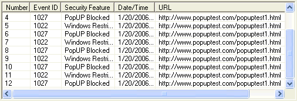
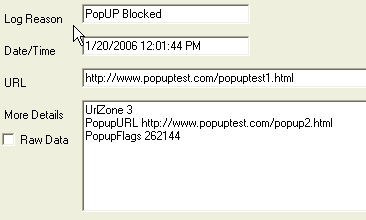

With the introduction of new products and platforms, there is always a need for tools to help plan and prepare for migrations. Internet Explorer 7 was released about the same time as the Windows Vista operating system, and is the browser shipped with Windows Vista. This section addresses the tools released in order to help enterprise customers test their environments for application compatibility as they evaluate Windows Vista, specifically Internet Explorer 7.
normal;mso-element:frame;mso-element-frame-hspace:9.0pt;mso-element-wrap:
around;mso-element-anchor-vertical:paragraph;mso-element-anchor-horizontal:
margin;mso-element-top:5.65pt;mso-height-rule:exactly'>I want to start
testing my internal sites, applications as well as our major partner
applications. Are there any tools to
help me find any problems while Im testing?
normal;mso-element:frame;mso-element-frame-hspace:9.0pt;mso-element-wrap:
around;mso-element-anchor-vertical:paragraph;mso-element-anchor-horizontal:
margin;mso-element-top:5.65pt;mso-height-rule:exactly'>|
Question:
Using the Internet Explorer Test Tool is helpful at identifying areas
that may not work properly in my environment, but the logs are pretty
long. How do I figure out which of
this information will really cause problems with my deployment?
Answer: The purpose of the
Internet Explorer Test Tool is to provide details on all issues that may
impact compatibility before you begin widespread deployments.
While the tool may gather a large amount of
data, the information in it is important and should be reviewed to ensure
there are no critical problems that will impact your environment.
Solution: To help sort
through the potentially large amount of data collected by the Internet
Explorer Test Tool, the tool was designed to quickly and easily provide
detailed information on each entry. An
example of data collected by the Internet Explorer Test Tool is:

The More Details section of the logging output provides more
information about why something was blocked (or logged), for example:
style='font-size:8.5pt;font-family:"Verdana","sans-serif";
mso-no-proof:yes'>
The tool provides useful and actionable information for issues that
break web applications or prevent expected behaviors.
By reading the detailed information from
the logs, you should be able to specifically identify and easily resolve
critical issues. Many issues
identified with the Internet Explorer Test Tool are related to the security
related changes made in Internet Explorer 7.
See the document at http://msdn2.microsoft.com/en-us/library/bb250493(VS.85).aspx
for more detailed information on
security related compatibility issues identified in your logs.
|
|
|
Question:
Many of the errors I see in the reporting logs are about CSS errors,
but the sites look fine to me, can I just ignore those errors?
What will happen if we dont fix them
before we deploy?
Answer: The errors you see
in your logs are important to note, but they may not require action to
successfully deploy Internet Explorer 7 in your environment.
Solution: Many of the
standards support design changes made in Internet Explorer 7 can be mitigated
by the use of certain DOCTYPE modes.
While it is not recommended to build new content using the quirks
mode settings, legacy content may be left alone and the DOCTYPE may remain
unchanged. If you do not see any
layout or other rendering issues in your testing, you can safely ignore the
errors.
However, if you do identify certain pages and layouts that do not
appear to be correct, the log information gathered by the Internet Explorer Test
Tool will help you understand the specific changes you need to make before
you begin deployment. To help
developers discover these sites and their workarounds, IE7 will create a log
whenever it discovers a workaround that has been rendered unnecessary by the
improvements in IE7. The following list shows some of the CSS fixes in IE7:
style='font-family:Symbol; mso-fareast-font-family:Symbol;mso-bidi-font-family:Symbol'> style='mso-list:Ignore'> style='font:7.0pt "Times New Roman"'> 0 (Star Filter) - Selector String style='font-family:Symbol; mso-fareast-font-family:Symbol;mso-bidi-font-family:Symbol'> style='mso-list:Ignore'> style='font:7.0pt "Times New Roman"'> 1 (Strict Comment Filter) - Property Name style='font-family:Symbol; mso-fareast-font-family:Symbol;mso-bidi-font-family:Symbol'> style='mso-list:Ignore'> style='font:7.0pt "Times New Roman"'> 2 (Underscore Filter) - Property Name |